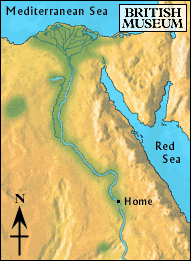

Nile

The blue water of the Nile sparkled in the bright sunlight. As the boy walked along the banks of the river, he saw two boats tied up next to each other on the shore. They were being loaded with grain and fruit by a group of men.
One of the workmen waved him over towards the boats. The boy walked over and the man offered him a place on one of the boats. He thought of finding his brother, and told the man he would go.
Should he board the boat going upstream or downstream?